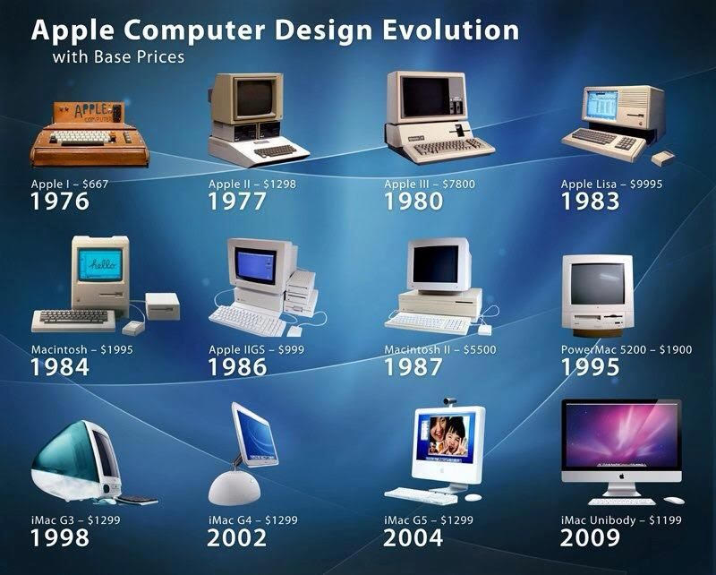
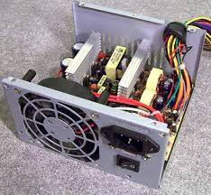
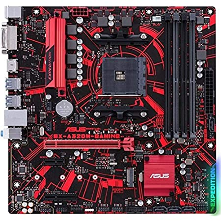

Computer hardware includes the physical parts of a computer, such as the case,[1] central processing unit (CPU), monitor, mouse, keyboard, computer data storage, graphics card, sound card, speakers and motherboard.[2] By contrast, software is the set of instructions that can be stored and run by hardware. Hardware is so-termed because it is "hard" or rigid with respect to changes, whereas software is "soft" because it is easy to change. Hardware is typically directed by the software to execute any command or instruction. A combination of hardware and software forms a usable computing system, although other systems exist with only hardware.
| Different Types of Computer Systems | Description |
|---|---|
| Desktop | It is a computer system that is used at home, at work, in schools, universities... It consists of a monitor and a casing inside which the power supply, the CPU, the motherboard and many other devices are located. These computers may be used for creating, editing, printing and sending documents. They are also used to communicate using the vast network of computers spread all over the world called the internet. They are used to play music, videos, games, and learn new languages, mathematics and many other scientific subjects. |
| Laptop | A laptop has similar computing power as the desktop but has a set of electrical batteries that allows it to be used in cars, parks, airplanes. They also have a smaller weight and are therefore portable. Besides being used to surf the net, send e-mails, they can also be used to create, edit and send documents, excel sheets. The portability and the computing power of laptops make them suitable for presentations, using for example power point, in conferences and forums. They also have enough power to play games, read and write CD's and DVD's. |
| Notebook | A notebook specializes in browsing the Web. They have the looks of laptops, but lack the full capabilities of a computer. They weigh less than a laptop and are smaller in size which are big advantages for travelers with needs to these machines. Almost all notebooks do not have CD / DVD drives. They also have smaller screens and their keyboards are smaller too. |
| Tablets PCs | A tablet PC has the capabilities of a laptop but is smaller in size and does not have a keyboard. It has a touch-screen that allows using fingers or stylus to input instructions and interact with the machine. The keyboard or mouse are not needed. It is light and small in size and is therefore easy to transport. Modern Tablet PCs allow you to use the internet to look for information and news, watch online videos, read e-books, communicate with your friends, shop online. Tablets are fitted with batteries that may last up to 10 hours. Major advances in technologies such such as battery life, smaller size yet larger memories, touch-screen recognition, and wireless internet access have all contributed to make the use of tablets PC more efficient and practical. |
| Smart phones. | Besides making telephone calls, a smart phone runs on an operating system and has the ability to let you send and receive e-mails, browse websites on the net and read documents. |
The personal computer is one of the most common types of computer due to its versatility and relatively low price. Desktop personal computers have a monitor, a keyboard, a mouse, and a computer case. The computer case holds the motherboard, fixed or removable disk drives for data storage, the power supply, and may contain other peripheral devices such as modems or network interfaces. Some models of desktop computers integrated the monitor and keyboard into the same case as the processor and power supply. Separating the elements allows the user to arrange the components in a pleasing, comfortable array, at the cost of managing power and data cables between them. Laptops are designed for portability but operate similarly to desktop PCs.[1] They may use lower-power or reduced size components, with lower performance than a similarly priced desktop computer. [5] Laptops contain the keyboard, display, and processor in one case. The monitor in the folding upper cover of the case can be closed for transportation, to protect the screen and keyboard. Instead of a mouse, laptops may have a touchpad or pointing stick. Tablets are portable computer that uses a touch screen as the primary input device. Tablets generally weigh less and are smaller than laptops. Some tablets include fold-out keyboards, or offer connections to separate external keyboards. Some models of laptop computers have a detachable keyboard, which allows the system to be configured as a touch-screen tablet. They are sometimes called "2-in-1 detachable laptops" or "tablet-laptop hybrids".[
The computer case encloses most of the components of the system. It provides mechanical support and protection for internal elements such as the motherboard, disk drives, and power supplies, and controls and directs the flow of cooling air over internal components. The case is also part of the system to control electromagnetic interference radiated by the computer and protects internal parts from electrostatic discharge. Large tower cases provide space for multiple disk drives or other peripherals and usually stand on the floor, while desktop cases provide less expansion room. All-in-one style designs include a video display built into the same case. Portable and laptop computers require cases that provide impact protection for the unit. Hobbyists may decorate the cases with colored lights, paint, or other features, in an activity called case modding.
.jpg)
A power supply unit (PSU) converts alternating current (AC) electric power to low-voltage direct current (DC) power for the computer. Laptops can run on built-in rechargeable battery.[7] The PSU typically uses a switched-mode power supply (SMPS), with power MOSFETs (power metal–oxide–semiconductor field-effect transistors) used in the converters and regulator circuits of the SMPS.[8]
The motherboard is the main component of a computer. It is a board with integrated circuitry that connects the other parts of the computer including the CPU, the RAM, the disk drives (CD, DVD, hard disk, or any others) as well as any peripherals connected via the ports or the expansion slots. The integrated circuit (IC) chips in a computer typically contain billions of tiny metal–oxide–semiconductor field-effect transistors (MOSFETs).[9] Components directly attached to or to part of the motherboard include: The CPU (central processing unit), which performs most of the calculations which enable a computer to function, and is referred to as the brain of the computer. It takes program instructions from random-access memory (RAM), interprets and processes them and then sends back results so that the relevant components can carry out the instructions. The CPU is a microprocessor, which is fabricated on a metal–oxide–semiconductor (MOS) integrated circuit (IC) chip. It is usually cooled by a heat sink and fan, or water-cooling system. Most newer CPU includes an on-die graphics processing unit (GPU). The clock speed of CPU governs how fast it executes instructions and is measured in GHz; typical values lie between 1 GHz and 5 GHz. Many modern computers have the option to overclock the CPU which enhances performance at the expense of greater thermal output and thus a need for improved cooling. The chipset, which includes the north bridge, mediates communication between the CPU and the other components of the system, including main memory; as well as south bridge, which is connected to the north bridge, and supports auxiliary interfaces and buses; and, finally, a Super I/O chip, connected through the south bridge, which supports the slowest and most legacy components like serial ports, hardware monitoring and fan control. Random-access memory (RAM), which stores the code and data that are being actively accessed by the CPU. For example, when a web browser is opened on the computer it takes up memory; this is stored in the RAM until the web browser is closed. It is typically a type of dynamic RAM (DRAM), such as synchronous DRAM (SDRAM), where MOS memory chips store data on memory cells consisting of MOSFETs and MOS capacitors. RAM usually comes on dual in-line memory modules (DIMMs) in the sizes of 2GB, 4GB, and 8GB, but can be much larger. Read-only memory (ROM), which stores the BIOS that runs when the computer is powered on or otherwise begins execution, a process known as Bootstrapping, or "booting" or "booting up". The ROM is typically a nonvolatile BIOS memory chip, which stores data on floating-gate MOSFET memory cells. The BIOS (Basic Input Output System) includes boot firmware and power management firmware.
